운송관리시스템 (TMS) 고도화
2024.01 ~ 2025.01 (1년)
프로젝트 개요
보세·항공·내륙 운송 업무를 지원하는 운송관리시스템(TMS) 고도화 프로젝트입니다. 운임, 선사, 차량, 기사, 샤시 등 물류 핵심 마스터 데이터를 체계적으로 관리하고, 운송 및 배차 현황 조회와 월간 실적·컨테이너별 손익 분석 기능을 개발했습니다.
기술 스택
담당 업무 Summary
- 마스터 데이터 관리: 운임, 선사, 차량, 기사, 샤시 장비 관련 API 및 관리 화면 개발
- 운송 및 배차 관리: Location/Depot 거점 관리와 일자·부서·협력사별 가용 차량 조회 기능 구현
- 실적 및 손익 분석: 월간 운송 실적 집계와 컨테이너별 매출·비용·이익 분석 대시보드 개발
- 조회 성능 개선: PostgreSQL 쿼리 튜닝 및 Server-side Pagination 적용
주요 기능
1. 기준정보(Master Data) 통합 관리
운송 업무에 필요한 운임·선사·세관 코드 및 차량 관련 기준정보를 조회하고 관리할 수 있는 기능을 개발했습니다.
- 차량 14,722건 및 기사 5,014건의 데이터를 조회할 수 있도록 Server-side Pagination 적용
- 보세·항공 운임 코드 약 220건, 선사·세관 코드 약 920건의 기준정보 관리 기능 구현
- 샤시 장비의 정비 이력과 사무소·최종·만료일 등 검사 관련 정보 관리
- Location/Depot 거점 매핑 및 COPINO EDI 연계 속성 관리
2. 배차 현황 및 월간 실적 분석
일자·부서·협력사별 가용 차량 현황을 조회하고, 월간 운송 실적과 컨테이너별 매출·비용 데이터를 분석할 수 있는 기능을 개발했습니다.
- 운송료·부가·부대 항목별 매출 및 비용을 분류하는 Pivot 집계 기능 구현
- W/O No. 및 CNTR No. 기준 컨테이너별 실적과 손익 조회 기능 개발
- 청구 금액과 비용을 비교해 운송 건별 수익성을 확인할 수 있는 조회 화면 구성
주요 화면
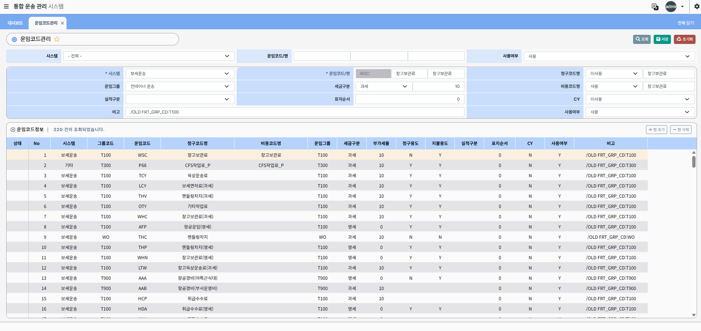
조회 조건에 따른 운임 코드 목록 조회 및 관리
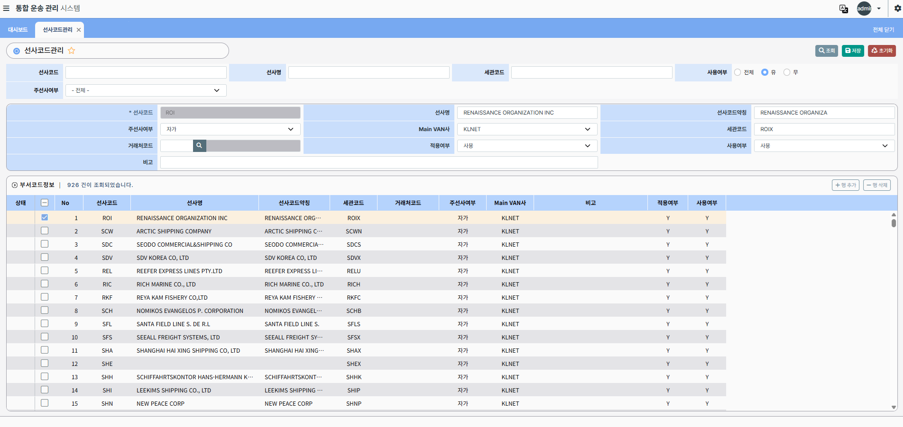
선사·세관 코드 및 Main VAN사 기준정보 조회와 페이징 처리
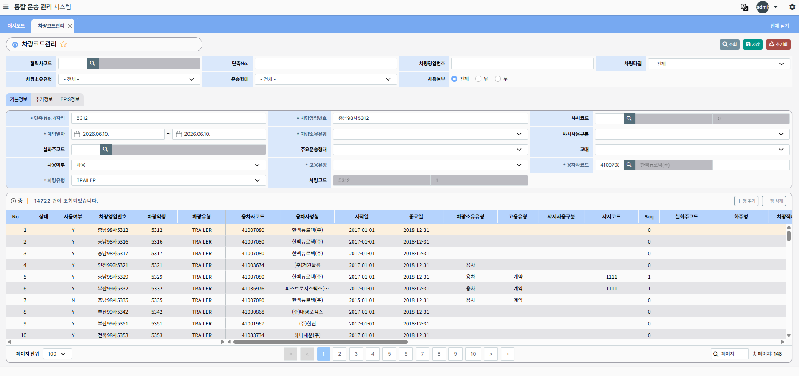
기본·추가·FPIS 탭 구성 및 차량 마스터 데이터 페이징 조회
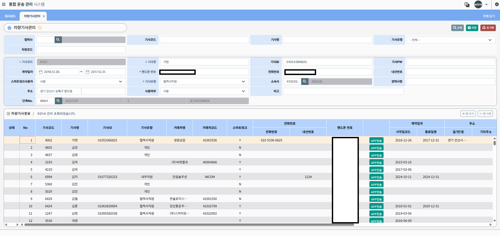
기사 프로필 관리 및 모바일 APP 연동 데이터 전송 기능
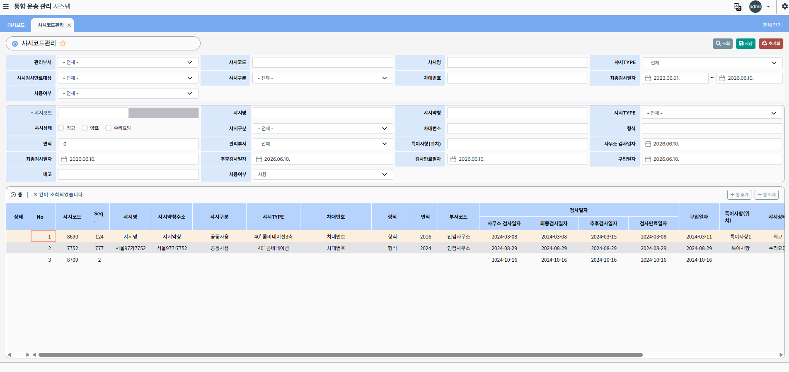
샤시 장비 상태 및 검사 관련 일자 정보 관리
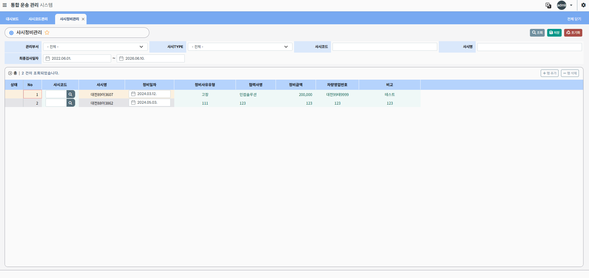
차량 영업번호와 연계한 샤시 정비 이력 및 비용 조회
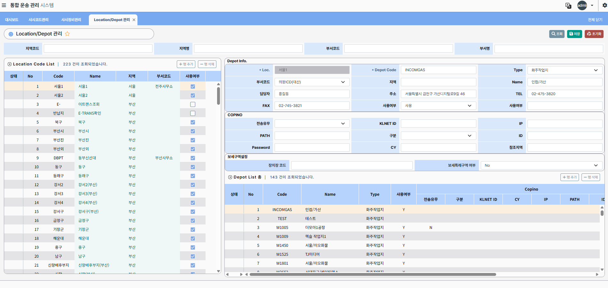
Location과 Depot 거점 매핑 및 EDI 통신 설정 관리
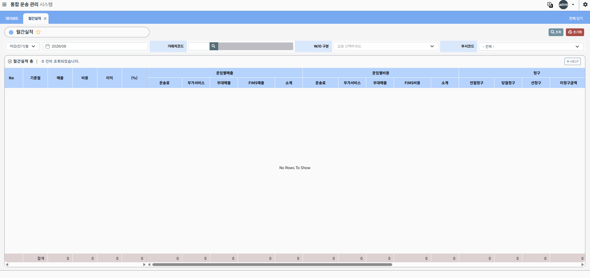
월별 운송료·부가·부대 항목의 매출 및 비용 Pivot 집계
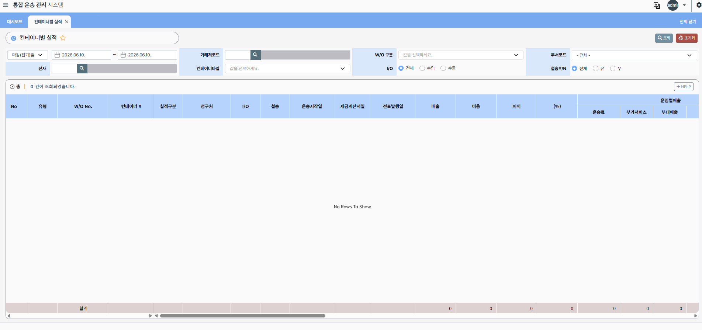
I/O 구분 및 철송 여부 등 조건별 컨테이너 실적 조회
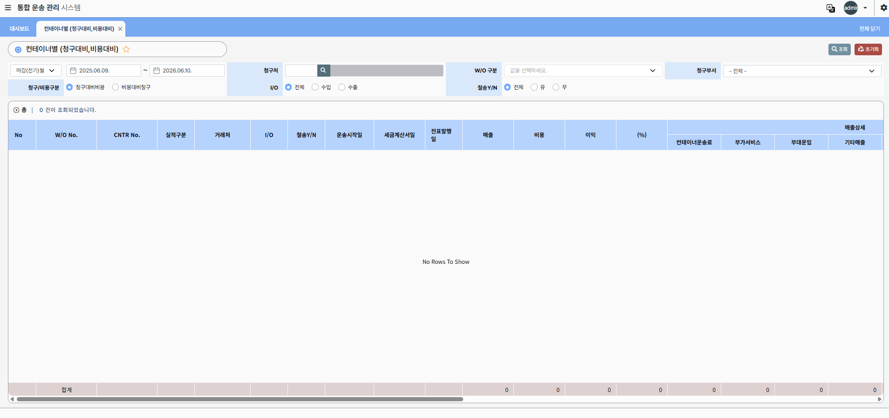
W/O 및 CNTR 단위 청구 금액과 비용 비교를 통한 손익 분석
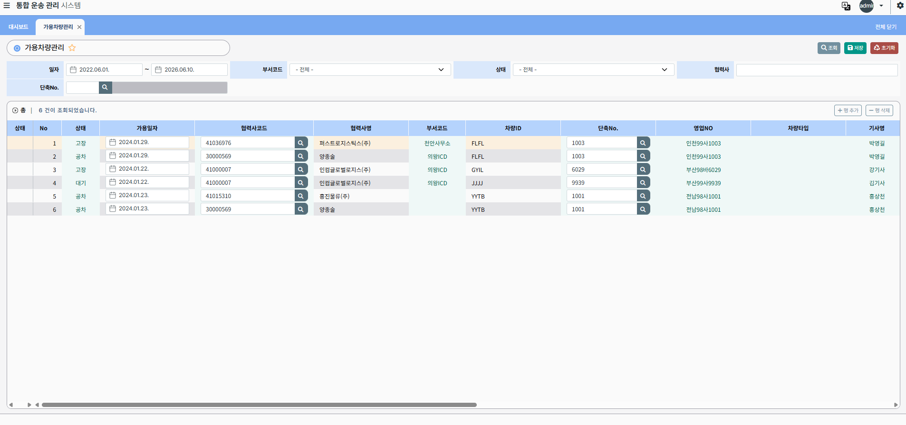
일자·부서·협력사별 가용 차량 및 배차 현황 조회
트러블 슈팅 (Problem Solving)
1. 대용량 차량·기사 데이터 조회 성능 개선
문제 및 원인
차량 및 기사 데이터를 조회할 때 다중 JOIN으로 인한 쿼리 실행 지연이 발생하고, 조회 결과가 많아지면서 프론트엔드 그리드 렌더링 부담이 커지는 문제가 있었습니다.
해결 방안
- 조회 조건에 사용되는 컬럼의 인덱스를 검토하고 복합 인덱스 적용
- 불필요한 Inline View를 정리하고 조회 쿼리 구조 개선
- PostgreSQL의 LIMIT/OFFSET 기반 Server-side Pagination을 적용해 필요한 데이터만 페이지 단위로 조회하도록 변경
결과
한 번에 조회하고 화면에 전달하는 데이터 양을 줄여 초기 로딩 부담을 완화하고 대용량 마스터 데이터의 조회 효율을 개선했습니다.
2. 월간 실적 집계의 소계·합계 불일치 해결
문제 및 원인
특정 W/O 조건에서 일부 금액 항목이 NULL로 계산되면서 Pivot 집계 결과의 소계와 합계가 일치하지 않는 문제가 발생했습니다.
해결 방안
- SQL 집계식에 COALESCE를 적용해 NULL 값에 대한 처리 기준 통일
- CASE-WHEN 기반 Pivot 연산 조건을 점검하고 집계 로직 개선
- 다양한 W/O 조건과 금액 조합을 기준으로 검증 테스트 수행
결과
NULL 값으로 인해 발생하던 집계 오차를 해결하고, 월간 운송 실적 및 컨테이너별 손익 데이터의 일관성을 개선했습니다.
프로젝트 성과
- 기준정보 관리 체계화: 운임·선사·차량·샤시 등 주요 마스터 데이터를 통합적으로 조회하고 관리할 수 있는 기능 개발
- 대용량 조회 성능 개선: 차량 약 1.4만 건 및 기사 약 5천 건의 데이터를 대상으로 쿼리 튜닝과 Server-side Pagination 적용
- 실적 분석 지원: 월간 운송 실적 및 컨테이너별 청구·비용 비교 기능을 통해 정산 및 수익성 분석 업무 지원
- 물류 도메인 이해: 보세·항공 운송, 샤시 정비, Location/Depot 관리 및 COPINO EDI 연계 업무 경험